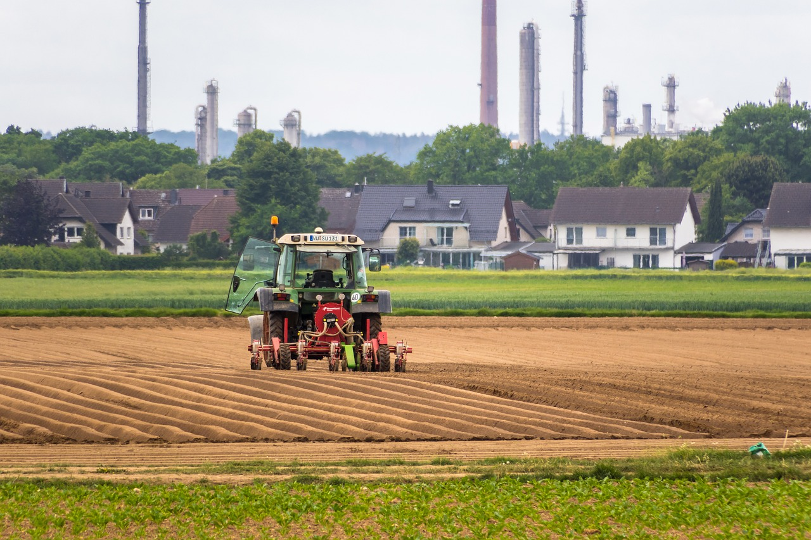

SOLUTECH
Modelos de cultivo eficientes
Confira alguns exemplos abaixo:
1. AGRICULTURA REGENERATIVA
No contexto de produção de alimentos, agricultura regenerativa é aquela capaz de produzir alimentos ao mesmo tempo em que propicia condições para a natureza se recuperar. Para isso, o produtor que adota a agricultura regenerativa e todas suas práticas precisa ter um olhar sistêmico para sua propriedade agrícola.
2. AGRICULTURA DE PRECISÃO (AP)
A agricultura de precisão (AP) consiste na aplicação de alta tecnologia no campo. Consideramos esta uma nova forma de manejo na lavoura, já que a agricultura de precisão compreende as diferentes necessidades presentes nas áreas de plantação, buscando explorar e estudar as mesmas para garantir maior retorno sustentável e econômico.
Com esse sistema, o produtor consegue controlar sua produção de maneira mais eficiente. Isso porque os sensores coletam e analisam as informações do campo, e a partir disso, tomam e aplicam decisões automáticas na plantação. Podemos dizer que essa tecnologia é um dos destaques da transformação digital do agronegócio.
3. AGRICULTURA VERTICAL
A agricultura vertical é a prática de cultivar culturas em camadas empilhadas verticalmente em um ambiente controlado, onde um ambiente natural é modificado para aumentar o rendimento da colheita. Pode ser a solução para aumentar a produtividade, ao ponto em que ajuda a combater a questão da porcentagem decrescente de terras aráveis, que é um dos maiores desafios enfrentados pela agricultura em todo o mundo.
Em vez de solo, meios de cultivo aeropônico, hidropônico ou aquapônico são usados. Que torna a agricultura vertical muito mais benéfica é o fator de sustentabilidade que ela oferece. A agricultura vertical é sustentável, pois requer 95% menos água em comparação com outros métodos agrícolas.